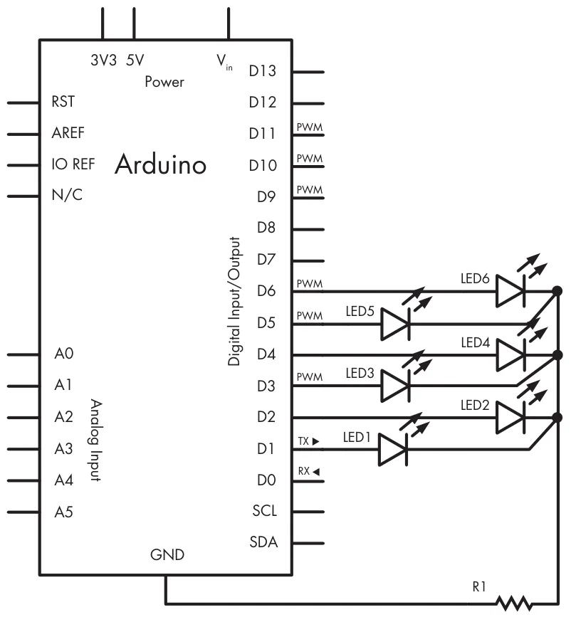

Our goal is to light one of six LEDs randomly to mimic the throw of a die. We’ll choose a random number between 1 and 6, and then turn on the corresponding LED to indicate the result. We’ll create a function to select one of six LEDs on the Arduino randomly and to keep the LED on for a certain period of time. When the Arduino running the sketch is turned on or reset, it should rapidly show random LEDs for a specified period of time and then gradually slow until the final LED is lit. The LED matching the resulting randomly chosen number will stay on until the Arduino is reset or turned off.
The Hardware
To build the die, we’ll need the following hardware:
- Six LEDs of any color (LED1 to LED6)
- One 560 Ω resistor (R1)
- Various connecting wires
- One medium-sized breadboard
- Arduino and USB cable
The Schematic
Because only one LED will be lit at a time, a single current-limiting resistor can go between the cathodes of the LEDs and GND. Figure 6-2 shows the schematic for our die.

The Sketch
Here’s the sketch for our die:
// Project 15 - Creating an Electronic Die
void setup()
{
randomSeed(analogRead(0)); // seed the random number generator
for ( int z = 1 ; z < 7 ; z++ ) // LEDs on pins 1-6 are output
{
pinMode(z, OUTPUT);
}
}
void randomLED(int del)
{
int r;
r = random(1, 7); // get a random number from 1 to 6
digitalWrite(r, HIGH); // output to the matching LED on digital pin 1-6
if (del > 0)
{
❶ delay(del); // hold the LED on for the delay received
}
❷ else if (del == 0)
{
do // the delay entered was zero, hold the LED on
forever
{}
❸ while (1);
}
digitalWrite(r, LOW); // turn off the LED
}
void loop()
{
int a;
// cycle the LEDs around for effect
for ( a = 0 ; a < 100 ; a++ )
{
randomLED(50);
}
// slow down
❹ for ( a = 1 ; a <= 10 ; a++ )
{
randomLED(a * 100);
}
// and stop at the final random number and LED
randomLED(0);
} do {} while (1);Here we use a loop in void setup() to activate the digital output pins. The function randomLED() receives an integer that is used in the delay() function at ❶ to keep the LED turned on for the selected time. If the value of the delay received at ❷ is 0, then the function keeps the LED turned on indefinitely, because we use at ❸, which loops forever, because 1 is always 1.
To “roll the die,” we reset the Arduino to restart the sketch. To create a decreasingly slow change in the LEDs before the final value is displayed, at ❹ we first display a random LED 100 times for 50 milliseconds each time. Next, we slow it down by increasing the delay between LED flashes from 100 to 1,000 milliseconds, with each flash lasting 100 milliseconds. The purpose of this is to simulate the “slowing down” of a die before it finally settles on a value, at which point the Arduino displays the outcome of the roll by keeping one LED lit with this last line:
randomLED(0);Modifying the Sketch
We can tinker with this project in many ways. For example, we could add another six LEDs to roll two dice at once, or perhaps display the result using only the built-in LED by blinking it a number of times to indicate the result of the roll. Use your imagination and new skills to have some fun!